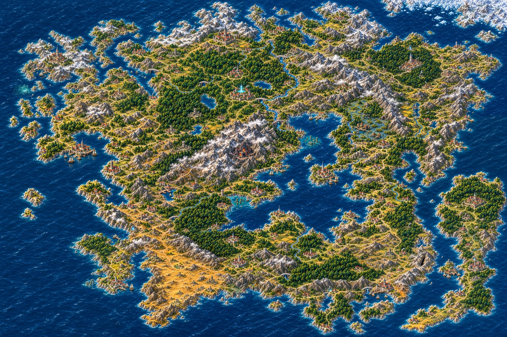

GPS projects Earth's entire longitude and latitude ranges onto Aumyr's mapped 45°W–45°E and 20°N–65°N chart. For fun, you can move independently by tapping the map or adjusting the sliders.
Or enter Earth coordinates manually if Safari does not allow GPS. This does not change your phone's real location.